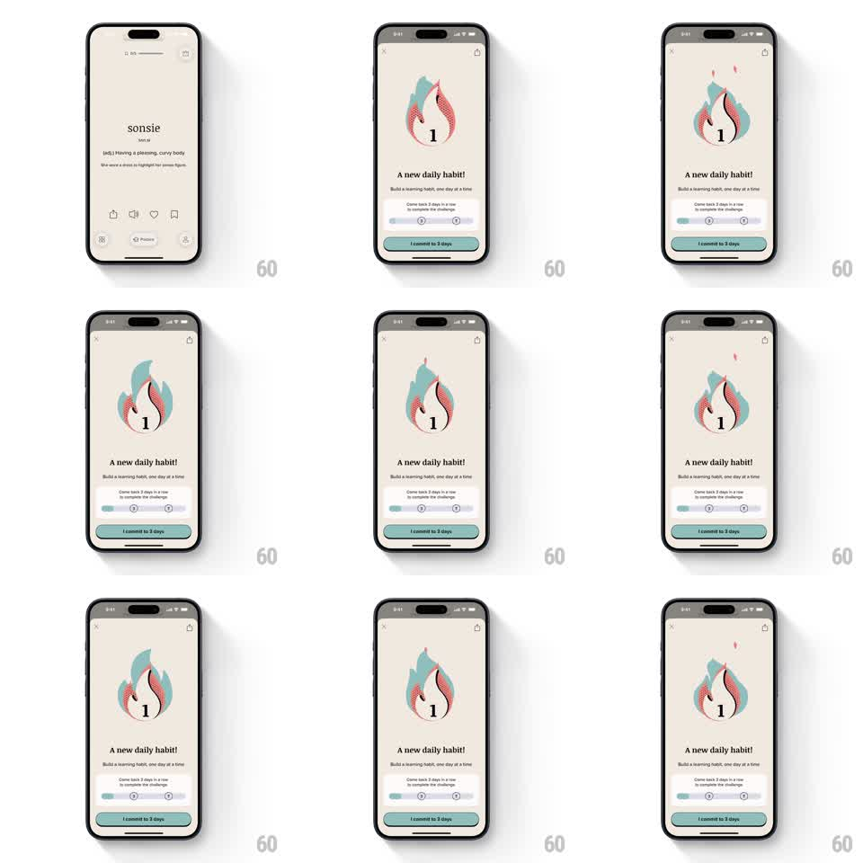

Media
Frame-by-frame

Rebuild this interaction 1:1: a vocabulary app's habit commitment sheet - a halftone flame illustration with the streak count idles with a gentle looping flicker over the "A new daily habit!" sheet.

Rebuild this interaction 1:1: a vocabulary app's habit commitment sheet - a halftone flame illustration with the streak count idles with a gentle looping flicker over the "A new daily habit!" sheet. ## Integration Integration: stack-agnostic spec - springs given as stiffness/damping, timed motions as duration + curve; map every value to your framework and animation library of choice. ## Scene Cream commitment sheet: close X and share icons top, a two-tone flame illustration (teal back flame, coral front flame, halftone dot texture) with a bold "1" at its center, headline "A new daily habit!", copy "Build a learning habit, one day at a time", a 3-day progress track (dots 1-2-3 connected by a line), teal "I commit to 3 days" button. ## Motion spec Pattern: looping illustration idle, ~2.4s cycle. - The two flame layers sway in counterphase: each rotates +-3deg and scales 1 -> 1.04 -> 1, ease-in-out, the coral layer offset by half a cycle. - 2-3 tiny ember dots detach from the flame tips and float up 20-30px, fading out (1.2s, staggered). - The streak number "1" stays perfectly still. - The progress track's first dot pulses softly (opacity 0.6 -> 1) on the same cycle. - Sheet, copy, and button are static. ## Calibration - The flicker is slow and calm (2.4s), matching a commitment moment - fast flames read as urgency. - Embers spawn from the flame tips only, never mid-body. ## Reduced motion Static flame, no sway, no embers; the progress dot holds at full opacity. ## Don't miss - The two flame layers must move independently; locked layers read as a static image. - The number inside the flame never participates in the sway - it's the anchor of the composition.